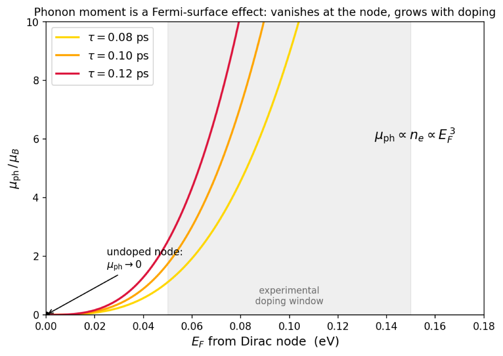

Condensed matter theory
Quantum Geometry of Superconductivity & Phonon Magnetism
Three first-author theories on how the quantum geometry of electron bands — Berry curvature and the quantum metric — shapes two very different phenomena: the size of a Cooper pair, and the magnetic moment of a phonon.
Berry curvature and the quantum metric are the two faces of an electron band's quantum geometry — a measure of how the quantum states themselves twist and stretch across momentum space, independent of their energy. Often treated as an abstraction, this geometry has concrete, measurable consequences. In three first-author papers I worked out two of them, in two different corners of condensed matter.
Quantum geometry of Cooper pairs

A momentum-space view of the paired state's quantum geometry — the phase winding of the pair wavefunction (colour) and the accompanying geometric vector field (arrows) that underlie the Cooper-pair quadrupole.
The size of a Cooper pair is a fundamental length scale of superconductivity. Conventionally it's set by the band dispersion and the superconducting gap — but that picture breaks down in flat bands, where the dispersion is quenched and the quantum geometry of the electronic states takes over. In this first-author paper I developed a general framework for the pair size in terms of band quantum geometry — the “Cooper-pair quadrupole moment,” whose trace gives the pair size. The key result: when time-reversal symmetry is broken, the Berry curvature of the pairing wavefunction contributes an essential term that previous quantum-metric theories missed, and together with the quantum metric it imposes a geometric lower bound on how small a pair can be. The framework covers dispersive and flat bands in a single description; applied to rhombohedral graphene, the Berry-curvature contribution can dominate and yields pair sizes comparable to the experimentally inferred coherence lengths.
Giant phonon magnetism in Dirac materials

The predicted phonon magnetic moment (in Bohr magnetons) grows steeply with doping away from the Dirac node and vanishes at the node — a Fermi-surface effect, shown across the experimental doping window.
Phonons — quantized lattice vibrations — normally carry almost no magnetic moment. In doped Dirac semimetals they can acquire giant ones. In two complementary first-author papers I built the theory of why: the circulating ions act on the Dirac electrons as emergent gauge and frame fields, and the electrons answer through their own topological transport coefficients. The result is a two-channel mechanism — one contribution set by the electronic Hall conductivity (Physical Review B 111, 035126, 2025), the other by the Hall viscosity (arXiv:2505.09732, 2025) — which also makes the phonon a rare experimental window onto Hall viscosity. The theory predicts how the moment scales with doping — vanishing at the Dirac node and growing steeply into the experimental window (figure) — and, evaluated first-principles for Cd3As2, it now guides magneto-Raman experiments by collaborators at Los Alamos (CINT) and UC Irvine.